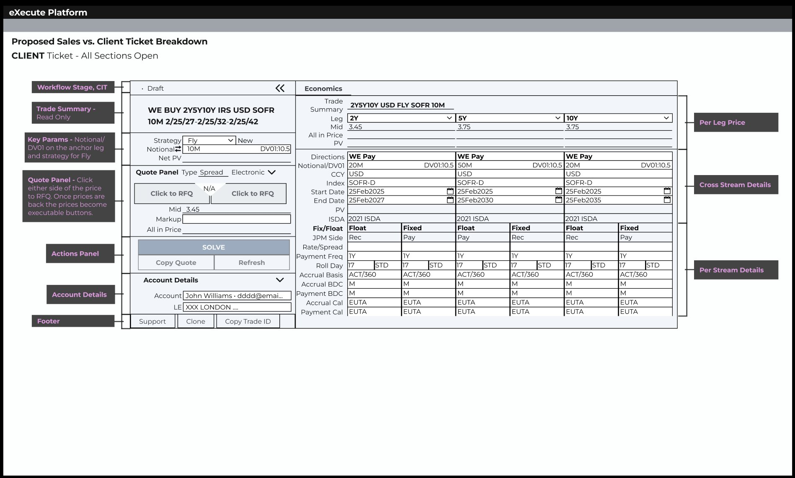

Background
A 30-year-old tool, and the mandate to replace it
Sapphire has been the primary tool for rates derivatives sales at JPMorgan for over 30 years. It covers the full trade lifecycle: structuring, pricing, client inquiries, and booking. Salespeople have built decades of muscle memory around its shortcuts, field layouts, and quirks.
The mandate was to decommission Sapphire and migrate the full sales workflow onto EWS, JPMorgan's internal sales execution platform, then extend it to serve external clients on Execute, JPMorgan's single-dealer platform. Three separate experiences, unified under one system.
Discovery
Advocating for research before design
The project came to me with Jiras already written and requirements already defined. Every requirement was a technical specification: field logic, system behavior, integration rules. No user needs. No reference to how salespeople actually worked. No existing research on this user group at all.
I pushed back. Over several weeks, I had conversations with my manager and product stakeholders, proposing roadmaps that included dedicated research time. It was a tough sell. The expectation was to start designing from the Jiras. Jumping straight into wireframes without understanding the people who would use them felt wrong, especially for a tool replacing 30 years of ingrained workflow.
Dedicated time for contextual inquiry research covering all rates desks, not just one product group. The buy-in took weeks, but the result was a research phase that gave us a real understanding of sales workflows before any design work started.
On the floor
With buy-in secured, I conducted in-depth research with salespeople on the trading floor: observing workflows, interviewing them about their tools, and mapping how they moved through a day. The goal was to understand not just what Sapphire did, but why people still depended on it after 30 years.

Four themes emerged:
- Monitor live market levels constantly
- Validate trade details against client inquiries
- Sapphire's features feel critical to doing the job
- Prefer voice for big trades where nuance matters
- Repetitive manual data entry across multiple tools
- No way to save templates or reuse models
- Slow, fragmented booking process
- Takes too long to quote certain swaps (e.g. fly)
- Sapphire freezes and has frequent bugs
- Incorrect default values cause errors
- Skeptical the new tool can handle trade nuance
- Doubt CT can accurately parse trade inquiries
- Constantly switching attention across systems
- Personal color-coding systems to track trades
- Quote-to-book flow needs to be more automated
- Standard swaps don't need modeling, just fast booking
Key insight: layout should match trade complexity
Salespeople naturally structure complex trades horizontally (multi-leg swaps with all legs visible side by side) and simple trades vertically (compact fields, minimal edits, fast execution). Sapphire didn't adapt to either. It showed everything, always.

The fields analysis confirmed the scale of the problem. Non-standardized swaps require over 35 configurable fields that vary by currency, strategy, and region. On top of that, market data refresh was manual. Sales had to actively refresh pricing in a window where clients respond in 10–20 seconds.
The Pivot
The mandate expands
About a year into the research, the business objective shifted. Decommissioning Sapphire and migrating to EWS was no longer the full story.

This was a significant expansion. Execute was built for clients, not salespeople. Since it's a single-dealer platform where clients come to trade, both a sales ticket and a client ticket were required. The same trade needed to work for the salesperson structuring it and the client executing it.
I mapped the workflow priorities across the three user groups the platform would need to serve:

The profiles are visibly different. Internal salespeople need deep customizability and fast execution. External clients need a clean, compliant interface. Designing for one audience would underserve the other. This confirmed the need for a modular architecture: shared trade economics, audience-specific everything else.
The research remained directly relevant. The users were the same, the asset class was the same, the pain points were the same. The platform had changed. The problem hadn't.
Scoping
Knowing what not to build first
Rates derivatives covers a wide spectrum, from plain vanilla interest rate swaps to highly customized non-linear instruments. Building for all of it on day 1 wasn't feasible. The scoping decision was grounded in research friction data and trade volume.
Standard Swaps (IRS)
The most commonly traded product with predictable fields and high volume.
Non-linear / Complex Swaps
Heavily customized instruments requiring specialized structuring.
Standard swaps account for the majority of trading volume. Research confirmed salespeople didn't need to model them, just execute them fast. Starting here meant delivering real value quickly while the complex instruments were scoped for later phases.
Design · Modular Architecture
One ticket, two audiences
Since Execute serves both salespeople and clients, the ticket needed to work for both. Rather than building two separate designs, I created a modular architecture: shared sections for trade economics, and audience-specific sections for workflow and account details.

The core trade — strategy, notional, DV01, per-leg pricing, and the solve button — is identical for both users. A change on one side propagates to the other. This means the economics engine was built once and applied everywhere.
Sales sees workflow context: clearing method, trader, client SPN, and markup. Clients see account details: account name and legal entity. Same trade, different context. Each audience sees only what's relevant to them.
The client ticket
The client ticket surfaces the full economics panel — identical to what sales sees — while replacing sales-specific workflow fields with the account details a client needs to execute. The annotations below map each section to its audience.

This approach meant shared patterns could evolve once and apply to both experiences, while each audience's specific needs stayed independent. It also reduced development overhead: the core economics engine was built once and inherited by both tickets.

Design · Regulatory Flow
The compliance gate
Before any trade could proceed on Execute, the regulatory checks had to pass. KYC, suitability, and MiFID II compliance were non-negotiable prerequisites. This work took a full quarter and was entirely foundational: nothing else could be built until it was done.

Within the compliance constraint, I focused on reducing friction. The design rationale came from the floor research: salespeople aren't reviewing the regulatory panel — they're trying to close the trade before prices move.
High-fidelity: the full regulatory flow

Error rows shown with red highlights. DNT rows expanded by default. Submit locked.

All rows displayed. Grouped: Error → Warning → Success. Warning and success rows collapsed.

User fills in required fields. Submit button unlocks once content is entered.

Overridden rows change to warning style. Banner updates to "CIT Passed with Warning."

All green. Panel hidden by default. If reopened, all rows collapsed with green checks.
Design · Structuring
Making the complex simple and the simple fast
Research surfaced two problems. Sapphire showed every structuring field at once, regardless of how complex the trade was, creating noise for standard trades that needed only a handful of inputs. And market data was stale: sales had to manually refresh pricing in a window where clients respond in seconds.
The legacy tool didn't distinguish between what was needed and what was available. Every field was shown, always.
10-20 seconds was the window before prices went stale. Manual refresh introduced risk at the moment speed mattered most.
The design response
Fields auto-display based on the product and strategy selected. A standard IRS shows only what's needed, arranged vertically for compact, fast execution. A multi-leg fly swap opens the full horizontal layout, with per-leg details side by side for comparison. Sales can switch between layouts at any time.
For pricing, live market data is built directly into the ticket. No manual refresh. Sales always see the current rate.


The goal wasn't to simplify rates derivatives structuring. That's not possible. The goal was to make the common case fast and the complex case accessible. Standard swaps should feel effortless. Everything else should be one step away.
Testing & Validation
Testing the core trading flow
With scope, content structure, parameter editability, and visual hierarchy aligned, I moved to high-fidelity design of a vanilla IRS ticket incorporating all agreed changes, then ran usability testing with sales users across global rates desks.
The prototype
The prototype covered the full IRS Outright electronic sales flow: from Draft through the compliance gate, through the RFQ lifecycle, and into booking. Three stages were tested end to end:
The RFQ panel was also tested as a focused question within the same study. All the key calls to action live in that panel: initiating an RFQ, stopping it, quoting the client, and refreshing. It needed to match how sales think about price and direction during a live trade.
Methodology
I used two methods to cover breadth and depth:
Participants completed a Qualtrics survey at their convenience, clicking through a prototype of the IRS Outright sales electronic flow from Ready for RFQ to Booking Success. Metrics collected: task completion rate, time to completion, and CSTAT score. Participants also selected their preferred RFQ panel layout from four options.
The designer and product manager were present with each participant. They clicked through the same prototype and gave real-time feedback on the same key screens as the survey.
Results
(NA, EMEA, APAC)
of the E2E Flow
(most tasks except RFQ)
E2E Flow (Unmoderated)
(Unmoderated)
The 92% task success rate validated the overall flow. But the RFQ task stood out: 59% of participants failed it due to unclear click areas. This became the top priority for redesign.
RFQ panel redesign
Participants evaluated four RFQ panel layout options against their mental model and trading habits:

Sales who actively manage markup chose B because the information order (Trader Level, Markup, All-in Level) matched how they think through a trade.
Sales who rarely touch markup preferred D because hiding that layer reduced noise — All-in Level was still prominent, just with less surrounding context they didn't need.
Both groups wanted All-in Level prominent. They diverged on markup context. Option B became the default; Option D as a settings toggle, letting each salesperson configure the panel to match how they trade.
Outcomes
Impact
The product is live across global desks in North America, EMEA, and APAC. Over 80 salespeople use it daily to structure and execute trades, with more teams onboarding as the rollout continues. 100% of USD vanilla swap volume — the most commonly traded instrument in the rates derivatives space — is now fully automated on the platform.
The client-facing ticket, which lets external clients execute trades directly on the platform, is going live this year. The architecture and design patterns I built for the sales experience are the foundation it's being built on: shared economics, modular structure, the same regulatory framework.
This is an ongoing project. The research from the discovery phase continues to shape prioritisation: which instruments to add, which user groups to onboard next, how to sequence the roadmap. The foundation built here is what makes each subsequent launch faster.
Reflection
What I learned
Replacing a 30-year-old tool isn't a design problem. It's a trust problem. Salespeople had built their careers around Sapphire. Earning their trust required showing the platform could handle the same complexity, not just claiming it could.
The discovery research was the most valuable investment. Floor observations and interviews gave me a level of understanding that no requirements document could have provided. When I could speak to a salesperson's workflow in their own language, the resistance dropped.
What I'd do differently
See the other flows through to testing. Usability testing covered the vanilla IRS flow, which was the right place to start. As the product expanded to more complex instruments, swaptions and multi-leg strategies, those flows went straight to engineering without the same validation. I'd push to test each new flow before handoff. The vanilla flow had a 59% failure rate on one task. Finding that in production is a risk I'd want to avoid.
Push for richer metrics in regular reporting. The numbers tracked so far, user count and percentage of volume automated, tell you adoption, not quality. I'd want reporting to include benchmark metrics: how the platform compares to the voice and chat workflows it replaced in speed, error rate, and re-quote frequency. That's the data that shows whether the design is actually working.